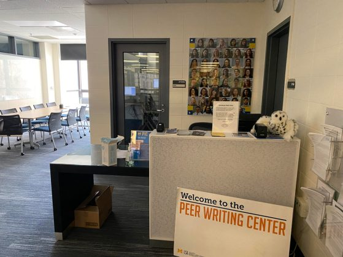

At the University of Michigan School of Information (UMSI), we offer a range of
resources to support students' academic success. Our advising team provides personalized
guidance on curriculum, course selection, and academic challenges. UMSI students can access
the University Library's digital and physical collections for research and coursework,
along with tutoring services and the UMSI Writing Center to enhance subject mastery and
writing skills. These resources help students excel and achieve their academic goals.
Check Out
UMSI Tutoring
In partnership with our UMSI faculty, the UMSI Peer Tutoring program
is an opportunity for UMSI students and students taking UMSI courses
to engage with peer tutors and receive assistance and support in
UMSI courses. The program includes Programming Peer Tutoring and
Math Peer Tutoring. For more information, visit
the Peer Tutoring website.
Sweetland Writing Center

The Sweetland Center for Writing at the University of Michigan
supports student writers from all disciplines. Offering one-on-one
consultations, peer help, and specialized assistance for
multilingual students, Sweetland helps develop writing skills.
Services include appointments, walk-ins, and online options, along
with courses, workshops, and writing groups. It's a vital resource
for enhancing academic and professional writing. For more
information, visit
the Sweetland Writing Center website.